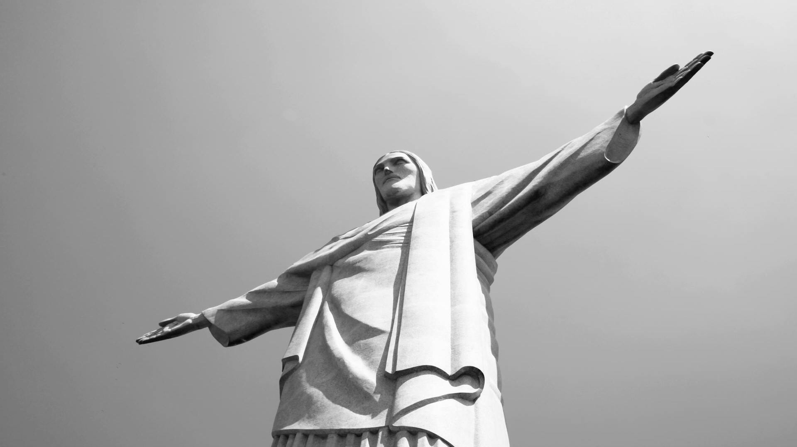
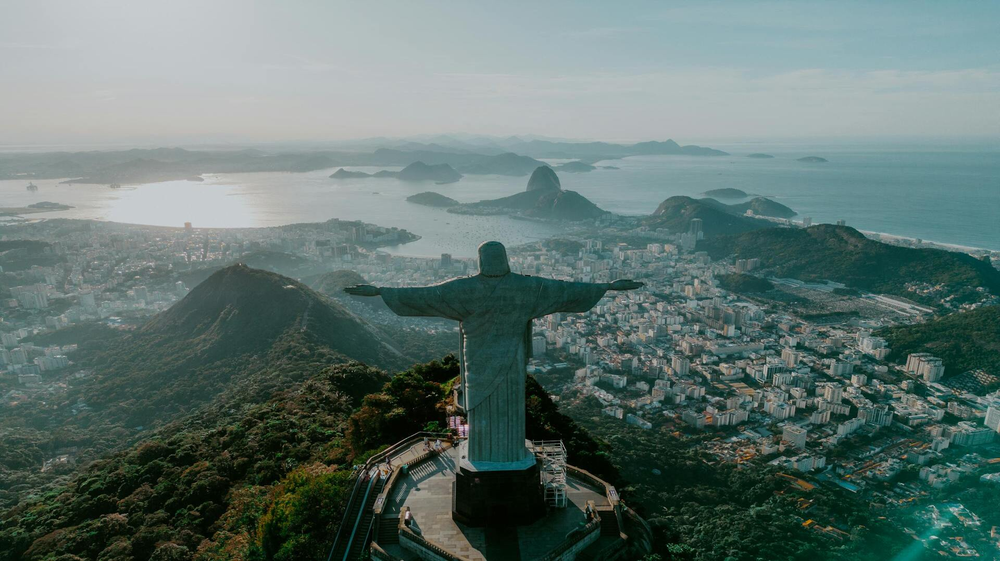
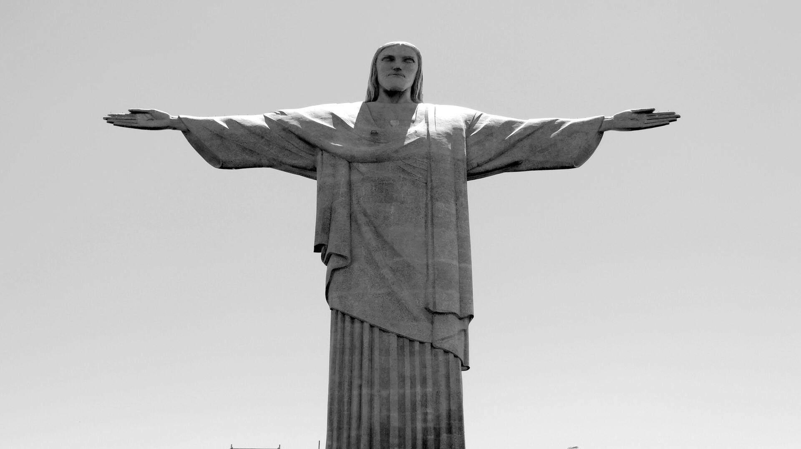

Kristaus Atpirkėjo statula



Kristaus Atpirkėjo statula, esanti ant Korkovado kalno Rio de Žaneire, Brazilijoje, yra viena žinomiausių pasaulio skulptūrų. Užbaigta 1931 m., ši 38 metrų aukščio statula simbolizuoja tikėjimą ir taiką. Ji buvo sukurta iš gelžbetonio ir muilo akmens. Iš statulos pagrindo atsiveria įspūdingi Rio paplūdimių, kalnų ir miškų panoraminiai vaizdai. Ši statula, 2007 m. paskelbta vienu iš naujųjų pasaulio stebuklų, išlieka piligrimų ir turistų traukos centru.